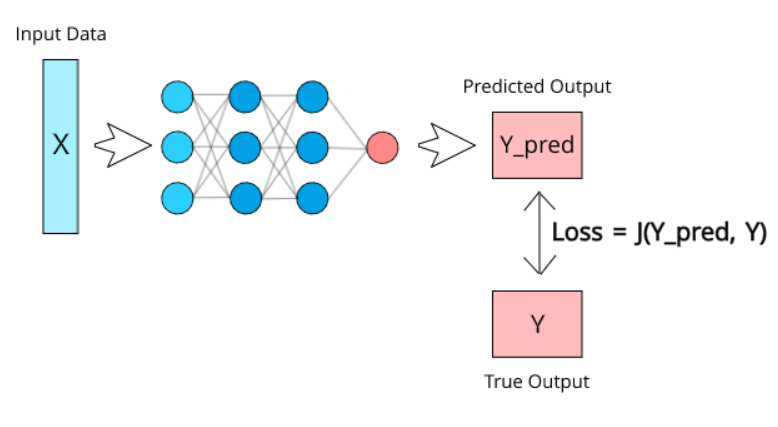
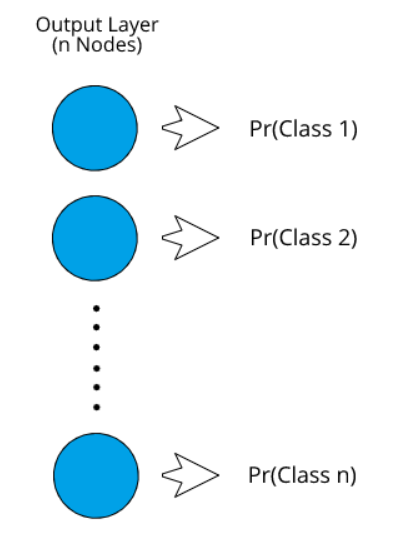
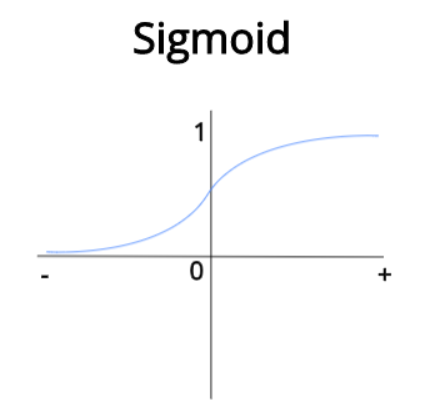
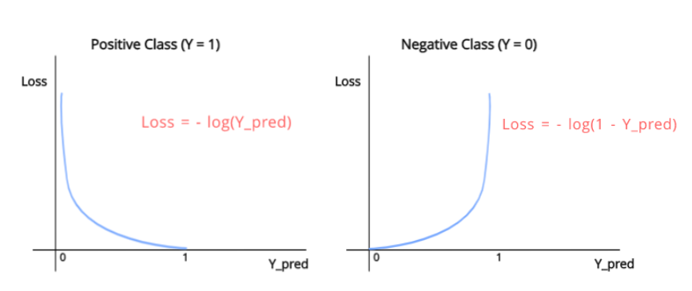
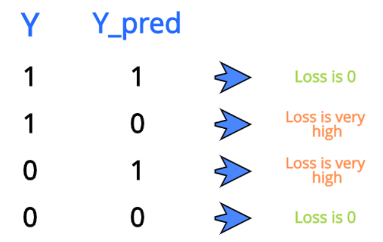
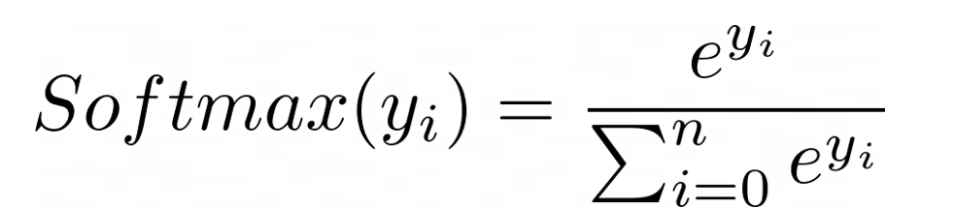
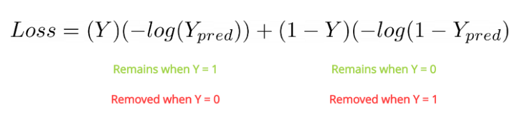
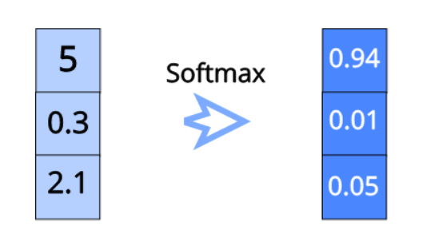
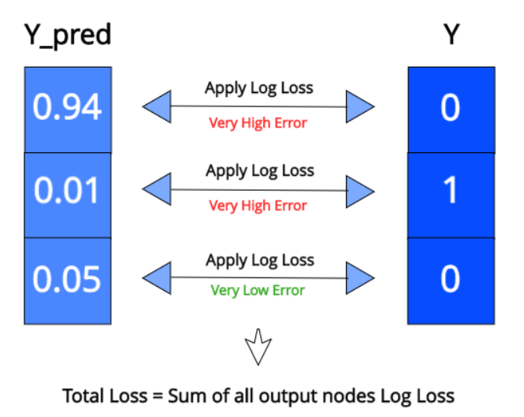
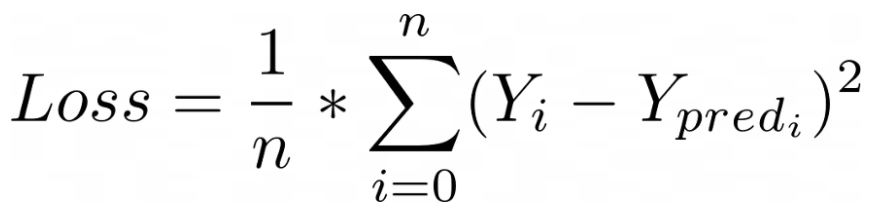

损失函数的解释
在任何深度学习项目中，配置损失函数都是确保模型以预期方式工作的最重要步骤之一。 损失函数可以为神经网络提供很多实用的灵活性，它将定义网络输出与网络其余部分的连接方式。
神经网络可以执行多种任务，从预测连续值（如每月支出）到对离散类别（如猫和狗）进行分类。 每个不同的任务将需要不同的损失类型，因为输出格式将不同。 具体任务将定义不同的损失函数。
从非常简化的角度来看，损失函数（J）可以定义为具有两个参数的函数：
预测输出；
实际输出。

通过将模型的预测值与应该输出的实际值进行比较，该函数将实质上计算出模型的执行效果。 如果Y_pred与Y相差很远，那么Loss值将非常高。 但是，如果两个值几乎相似，则“损失”值将非常低。 因此，我们需要保持一个损失函数，该函数在对数据集进行训练时可以有效地惩罚模型。
如果损失非常大，那么这个巨大的价值将在训练过程中通过网络传播，权重的变化将比平常多一点。 如果损失小，则权重不会发生太大变化，因为网络已经做得很好了。
这种情况有点类似于学习考试。 如果一个人在考试中表现不佳，我们可以说损失非常高，那么这个人将不得不改变自己，以便下次获得更好的成绩。 但是，如果考试进行顺利，那么为下一次考试他们将不必改变太多现在的做法。
现在，让我们将分类视为一项任务，并了解在这种情况下损失函数的工作方式。
分类损失
当神经网络试图预测离散值时，我们可以将其视为分类模型。 这可能是网络试图预测图像中存在哪种动物，或者电子邮件是否为垃圾邮件。 首先，让我们看看分类神经网络的输出表示方式。

输出层的节点数将取决于数据中存在的类数。 每个节点将代表一个类。 每个输出节点的值本质上表示该类别为正确类别的概率。
1 | Pr(Class 1) = Probability of Class 1 being the correct class |
一旦获得所有不同类别的概率，我们就将具有最高概率的类别视为该实例的预测类别。 首先，让我们探讨如何进行二进制分类。
二进制分类
在二进制分类中，即使我们将在两个类之间进行预测，在输出层中也将只有一个节点。 为了获得概率格式的输出，我们需要应用一个激活函数。 由于概率要求取0到1之间的值，因此我们将使用S型函数，该函数可以将任何实际值压缩为0到1之间的值。

随着Sigmoid的输入变大并趋向于无穷大，Sigmoid的输出趋向于1。随着Sigmoid的输入变小而趋向于负无穷大，输出将趋于0。现在我们保证总会得到 一个介于0到1之间的值，这正是我们需要的值，因为我们需要概率。
如果输出高于0.5（概率为50％），我们将认为它属于正类别；如果输出低于0.5，则我们将认为它属于负类别。 例如，如果我们正在训练一个在猫和狗之间进行分类的网络，则可以为狗分配正类，并且在狗的数据集中的输出值将为1，类似地，将为猫分配负类，而对猫的输出值将为 为0。
我们用于二进制分类的损失函数称为二进制交叉熵（BCE）。 该功能有效地惩罚了用于二进制分类任务的神经网络。 让我们看一下此功能的图像。

如您所见，有两个单独的函数，每个Y值一个。当我们需要预测正类（Y = 1）时，我们将使用
1 | Loss = -log(Y_pred) |
当我们需要预测负类（Y = 0）时，我们将使用
1 | Loss = -log(1-Y_pred) |
如您在图表中所见。 对于第一个函数，当Y_pred等于1时，损失等于0，这是有道理的，因为Y_pred与Y完全相同。随着Y_pred值变得更接近0，我们可以观察到Loss值以非常高的速度增加 速率，当Y_pred变为0时，趋于无穷大。 这是因为从分类的角度来看，0和1必须相反，因为它们各自代表完全不同的类。 因此，当Y_pred为0且Y为1时，为了使网络更有效地了解错误，损失将非常大。

我们可以在数学上将整个损失函数表示为一个方程式，如下所示：

此损失函数也称为对数损失。 这就是为二进制分类神经网络设计损失函数的方式。 现在，让我们继续来看如何为多类别分类网络定义损失。
多类别分类
当我们需要我们的模型每次预测一个可能的类输出时，多类分类是合适的。 现在，由于我们仍在处理概率，因此仅将sigmoid应用于所有输出节点可能有意义，以便我们为所有输出获得介于0–1之间的值，但这是有问题的。 在考虑多个类别的概率时，我们需要确保所有单个概率的总和等于1，因为这是定义概率的方式。 应用S形不能确保总和始终等于1，因此我们需要使用另一个激活函数。
我们在这种情况下使用的激活函数是softmax。 此功能确保所有输出节点的值都在0–1之间，并且所有输出节点值的总和始终等于1。 softmax的公式如下：

让我们用图像示例：

如您所见，我们只是将所有值传递给指数函数。 之后，要确保它们都在0–1的范围内，并确保所有输出值的总和等于1，我们只需将每个指数除以所有指数的总和即可。
那么，为什么在归一化每个值之前必须将它们传递给指数呢？ 为什么我们不能仅将值本身标准化？ 这是因为softmax的目标是确保一个值非常高（接近1），而所有其他值都非常低（接近0）。 Softmax使用指数来确保发生这种情况。 然后我们在归一化，因为我们需要概率。
现在我们的输出格式正确，让我们继续研究如何为此配置损失函数。 好消息是损失函数与二进制分类的函数基本相同。 我们将只针对每个输出节点将其对数损失应用到各自的目标值，然后我们将在所有输出节点上求和。

这种损失称为分类交叉熵。 现在，让我们进入一种称为多标签分类的特殊分类情况。
多标签分类
当模型需要预测多个类别作为输出时，便完成了多标签分类。 例如，假设您正在训练神经网络，以预测某些食物图片中的成分。 我们需要预测多种成分，因此Y中会有多个1。
为此，我们不能使用softmax，因为softmax始终只会迫使一个类别变为1，而其他类别变为0。因此，由于我们试图预测每个类别的个体概率，因此可以简单地在所有输出节点值上保持sigmoid。
至于损失，我们可以直接在每个节点上使用对数损失进行求和，类似于在多类分类中所做的。
既然我们已经介绍了分类，现在让我们介绍回归损失函数。
回归损失
在回归中，我们的模型正在尝试预测连续值。 回归模型的一些示例是：
- 房价预测
- 年龄预测
在回归模型中，我们的神经网络将为每个我们试图预测的连续值提供一个输出节点。 通过在输出值和真实值之间进行直接比较来计算回归损失。
我们用于回归模型的最流行的损失函数是均方误差损失函数。 在此，我们仅计算Y和Y_pred之差的平方，并对所有数据求平均值。 假设有n个数据点：

在这里，Y_i和Y_pred_i指的是数据集中第i个Y值，以及来自神经网络的相同数据的相应Y_pred。
到此结束本文。 希望现在您对如何为深度学习中的各种任务配置损失函数有更深入的了解。 感谢您的阅读！
参考：https://medium.com/deep-learning-demystified/loss-functions-explained-3098e8ff2b27

原文作者: 贺同学
原文链接: http://clarkhedi.github.io/2020/10/27/sun-shi-han-shu-de-jie-shi/
版权声明: 转载请注明出处(必须保留原文作者署名原文链接)